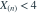
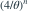

样本来自  ，检验 对 ，拒绝域为
，检验 对 ，拒绝域为
，检验 对 ，拒绝域为 
。要使检验大小严格小于 0.01，n 最小为多少？- A19
- B22
- C21
- D20
我已思考，展开答案与解析
正确答案：C
- 当 时，拒绝概率

在边界 最大，因此大小为 。 - ，。
易错提醒复合原假设的大小是整个原假设参数集合中的最大拒绝概率。
JYSG · 432精选 · 册内复旦大学432·2023年·九；PDF第39页（印刷页37）
原大题拆解
，检验 对 ，拒绝域为 
。要使检验大小严格小于 0.01，n 最小为多少？
在边界 最大，因此大小为 。JYSG · 432精选 · 册内复旦大学432·2023年·九；PDF第39页（印刷页37）
原大题拆解